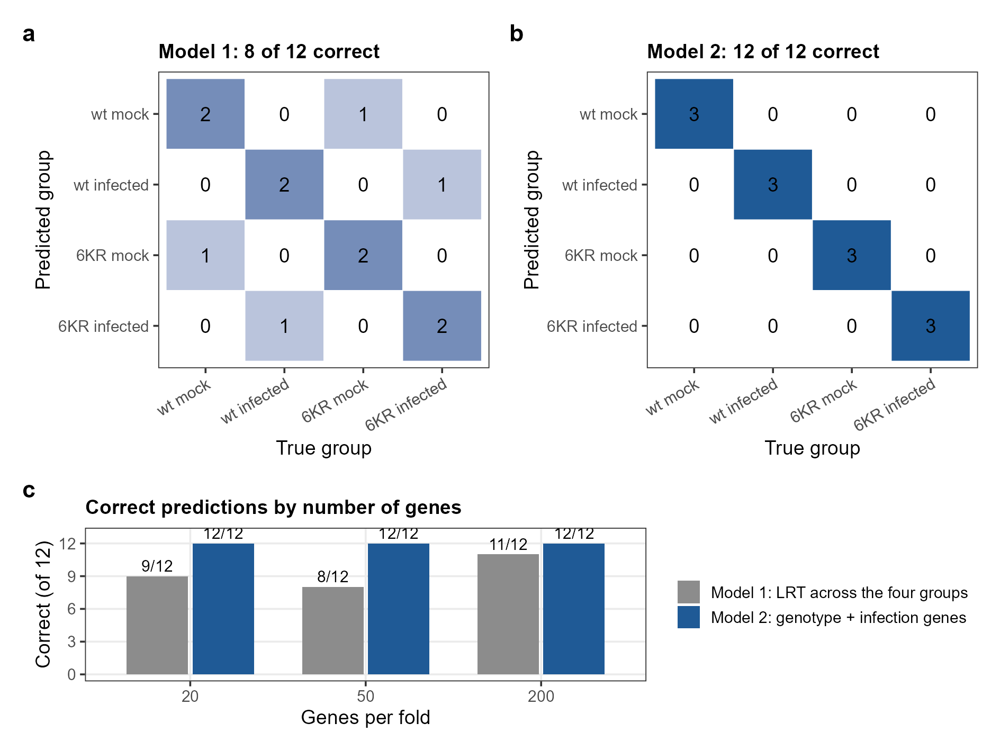
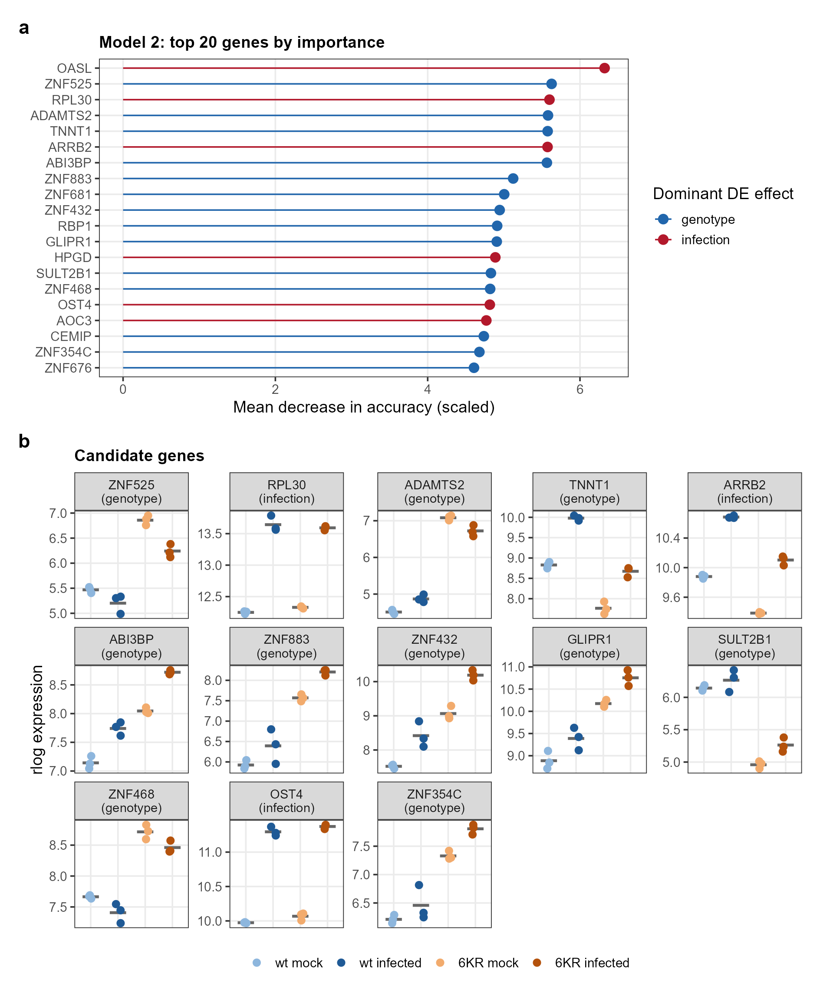

flowchart TB A["12 samples"] --> B["Leave one sample out<br>(repeated for each of the 12)"] B --> C["11 training samples"] B --> T["1 test sample"] C --> D["DESeq2 on the 11 samples only<br>→ top 50 genes"] D --> F["Random Forest, 1,000 trees"] F --> P["Predict the test sample"] T --> P P --> R["12 out-of-fold predictions → accuracy"]
Random Forest classification
How well can 12 samples be classified, and what decides it?
What a Random Forest does
A Random Forest is a collection of decision trees. Each tree is grown on a bootstrap sample of the training samples and, at every split, may only choose among a random subset of the genes. A new sample is classified by letting all trees vote, and the share of votes for each class is a built-in measure of how confident the forest is. Here, 1,000 trees per forest classified the four groups (wt mock, wt infected, 6KR mock, 6KR infected) from rlog expression values. Random Forests suit expression data because they still work with thousands of genes and few samples, handle more than two classes directly, and rank genes by their importance: how much the accuracy drops when the values of one gene are randomly permuted.
Why the gene selection has to happen inside the cross-validation
With 12 samples there is no separate test set, so performance is estimated by leave-one-out cross-validation (LOOCV): each sample is predicted once by a forest built on the other 11. The trap is the gene selection. Choosing the “best” genes on all 12 samples and then cross-validating only the forest lets the test sample influence which genes the model sees, and the estimate becomes optimistic, a selection bias described by Ambroise and McLachlan (PNAS 2002). Therefore the DESeq2 gene selection was repeated inside every fold, on the 11 training samples only, and the pipeline stops with an error if the left-out sample ever enters a fold’s DESeq2 fit.
The gene filter and the blind rlog transformation use no group labels, so they were computed once for all samples without leaking class information.
The planned model: 8 of 12
Model 1 selected, in every fold, the 50 genes with the smallest p-value in a DESeq2 likelihood-ratio test of the four-group model against a model without groups. It classified 8 of 12 samples correctly (accuracy 0.67, 95 % confidence interval 0.35–0.90), clearly above the 3 of 12 expected by chance (Benjamini-Hochberg adjusted p = 0.0028). Infected and mock samples were separated without error, but all 4 errors confused the genotypes, one in each group, and the vote share of the true class (0.38–0.46) was below that of the predicted class (0.51–0.61).
Vote shares of the leave-one-out predictions with 50 genes. Each bar is one left-out sample, the colours show how the 1,000 trees voted. Interactive: hover for the exact shares.
Why did Model 1 miss the genotype?
The likelihood-ratio test ranks genes by their overall difference between the four groups, and that difference is dominated by infection. In the final Model 1, 50 of the 50 genes are infection genes, but only 7 are genotype genes in mock cells. The model most likely saw almost no genotype information, which also explains why its accuracy moved with the number of genes (9, 8 and 11 of 12 correct with 20, 50 and 200 genes).
A design-aware selection: 12 of 12
Model 2 applies the 2 × 2 design to the gene selection: in every fold it takes the 25 genes with the strongest genotype effect and the 25 with the strongest infection effect of an additive DESeq2 model. It classified all 12 samples correctly (95 % confidence interval 0.74–1.00), with 20, 50 and 200 genes alike.
WarningThis estimate is optimistic
The rule of Model 2 was chosen after the errors of Model 1 were analysed on the same 12 samples. Even though the gene selection stayed inside the folds, the choice of the rule itself did not, so the cross-validated accuracy of Model 2 is likely optimistic. The pre-specified result of this project is the one of Model 1, and only an independent dataset could confirm Model 2.

Which genes carry the classification?
A final Model 2 was fitted on all 12 samples to rank its genes by importance (scaled mean decrease in accuracy), and the number of folds in which each gene was selected was counted as its stability. Genes among the 20 most important that were selected in at least 10 of 12 folds were defined in advance as candidate biomarkers.
| Gene | Effect | Importance rank | Folds selected | log2 FC infection (wt) | log2 FC 6KR vs wt (mock) |
|---|---|---|---|---|---|
| ZNF525 | genotype | 2 | 10 / 12 | -1.27 | 2.83 |
| RPL30 | infection | 3 | 10 / 12 | 2.13 | 0.08 |
| ADAMTS2 | genotype | 4 | 12 / 12 | 0.37 | 7.46 |
| TNNT1 | genotype | 5 | 12 / 12 | 1.68 | -1.86 |
| ARRB2 | infection | 6 | 12 / 12 | 1.21 | -0.81 |
| ABI3BP | genotype | 7 | 12 / 12 | 1.11 | 1.62 |
| ZNF883 | genotype | 8 | 12 / 12 | 1.14 | 3.26 |
| ZNF432 | genotype | 10 | 12 / 12 | 1.70 | 2.71 |
| GLIPR1 | genotype | 12 | 11 / 12 | 0.85 | 2.02 |
| SULT2B1 | genotype | 14 | 10 / 12 | 0.28 | -3.19 |
| ZNF468 | genotype | 15 | 12 / 12 | -0.49 | 1.72 |
| OST4 | infection | 16 | 12 / 12 | 2.06 | 0.11 |
| ZNF354C | genotype | 19 | 12 / 12 | 0.57 | 2.16 |
Most candidates are genotype markers, among them five KRAB zinc-finger genes, the gene family that recruits TRIM28 to repress endogenous retroviruses, so their up-regulation in 6KR cells is the expected signature of impaired TRIM28 function. The infection marker RPL30 most likely reflects the host shutoff rather than an absolute induction. OASL, the most important gene of the final model, was selected in only 9 of 12 folds and so did not pass the stability rule.

What I took away from this
Some general things I learned about Random Forests on small data, and which I will probably keep in mind for the next project:
- The gene selection is part of the model, so it has to be inside the cross-validation as well, otherwise the accuracy tells you more about the selection than about the classifier.
- How you select the genes decides what the forest can learn at all. When the selection just follows the biggest effect, a smaller but real factor like the genotype can get lost.
- Every rule you choose after looking at the result costs a bit of honesty, that’s why Model 2 is reported as an improvement from the error analysis and not as the main result.
- I’d always report the vote shares and the selection stability as well, because the 12 predictions alone hide how close the decisions were and how much the selected genes change between the folds.